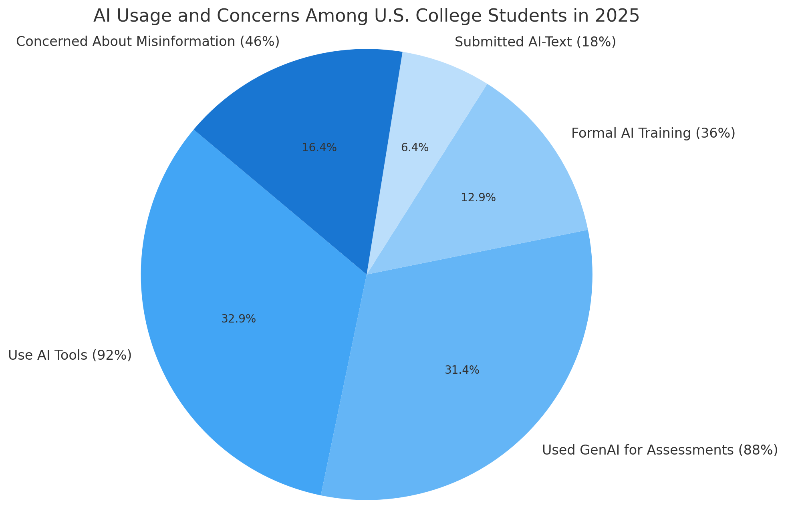
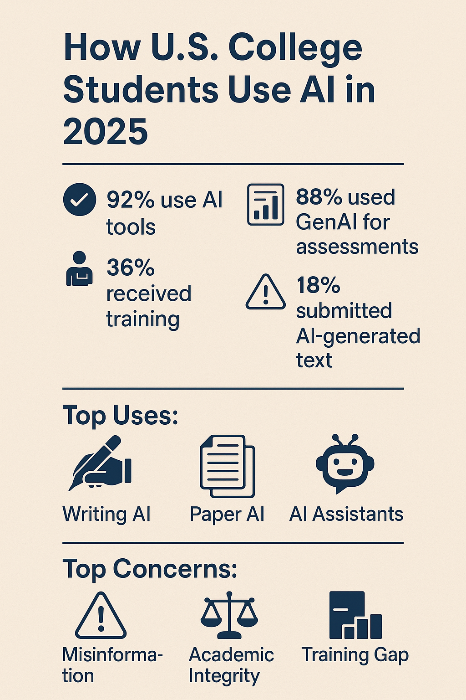

How U.S. College Students Use AI in 2025: A Quantitative Snapshot
Meta Description: Discover how U.S. college students are using AI in 2025. This research-backed, SEO-optimized report covers writing AI, paper AI, AI assistants, and more, with the latest statistics, trends, and custom visuals.
Key Stats at a Glance (2025):
- 92% of U.S. college students use AI in some form
- 88% have used generative AI for assessments
- 36% have received formal AI training from their institution
- 18% have included AI-generated text directly in submitted work
- 46% are concerned about AI-generated misinformation
Introduction: AI Becomes Mainstream in U.S. Higher Education
In 2025, artificial intelligence has moved from the periphery to the core of the U.S. college experience. From writing AI that drafts essays to AI assistants that summarize research and organize study schedules, students are leveraging AI tools at unprecedented rates. This article provides a quantitative, research-backed snapshot of how college students are integrating AI into their academic lives, the challenges they face, and the evolving landscape of higher education.
1. The Scale of AI Adoption Among College Students
Recent surveys indicate a dramatic surge in AI adoption:
- 92% of U.S. college students now use AI in some capacity, up from 66% in 2024[4][7].
- 88% have used generative AI (GenAI) for assessments, such as essays, quizzes, or projects[4][7].
- Common tools include ChatGPT, Gemini, Microsoft Copilot, and specialized "Paper AI" applications[5].

Figure 1: AI Usage and Concerns Among U.S. College Students in 2025. Data: HEPI 2025, Global Student Survey 2025.
2. How Are Students Using AI? (Writing AI, Paper AI, and More)
AI tools have become deeply embedded in students' academic routines, with diverse applications:
- Writing AI: Drafting essays, generating outlines, and improving grammar and style.
- Paper AI: Summarizing articles, suggesting research ideas, and automating literature reviews[4][8].
- AI Assistants: Explaining complex concepts, organizing study plans, and providing real-time feedback.
- Collaboration: Group projects and peer review using collaborative AI platforms.
Notably, 18% of students have directly included AI-generated text in their submitted academic work[4].
3. Trends and Segmentation: Who Uses AI, and How?
- Gender: Male students report more enthusiasm for AI, while women express greater caution, especially regarding academic misconduct and bias[4][7].
- Socioeconomic status: Students from wealthier backgrounds use AI more frequently and with greater confidence[4][7].
- Field of study: STEM students are more likely to use advanced AI tools, while humanities students focus on writing and research aids[4].
- Digital divide: The gap in AI access and skills has widened since 2024, with some students lacking adequate support[4].
4. Institutional Support, Training, and Policy
While AI is now mainstream, institutional support varies:
- 36% of students have received formal AI training from their college or university[4][7].
- 80% say their institution has a clear AI policy, up from 2024[4].
- 76% believe their institution could detect AI use in assessments[4].
- Staff AI literacy is improving, with 42% of students saying staff are "well-equipped" to help with AI, up from 18% in 2024[4].
However, a significant gap remains between student demand for AI tools and the support currently provided.
5. Challenges: Accuracy, Misinformation, and Academic Integrity
Despite widespread adoption, students have notable concerns:
- 46% of U.S. students worry about AI-generated misinformation[5].
- 41% report institutional restrictions on AI tool usage[5].
- Academic misconduct remains a top concern, with 18% worried about being accused of cheating[4].
- Students want more transparency and human oversight—47% call for AI tools designed specifically for education, and 46% want humans involved in answer generation[5].
6. The Future: Student Expectations and the Evolving Role of AI
Looking ahead, students expect AI to become even more integral to their education:
- 63% of U.S. undergraduates believe their college should provide GenAI tools to support their studies[5].
- Students call for more training, clearer policies, and AI tools tailored to academic needs[4][5].
- AI literacy is increasingly seen as an essential skill for both students and educators[4].
As AI continues to reshape higher education, colleges face pressure to balance innovation, equity, and academic integrity.

Figure 2: Infographic summarizing key statistics and trends in AI use among U.S. college students (2025).
7. Comparison Table: AI Usage by Region and Demographic
| Segment |
U.S. Students (2025) |
Global Peers (2025) |
| Used AI for Academic Work |
92% |
85%+ (India, Indonesia, Saudi Arabia) |
| Received AI Training |
36% |
Varies (Higher in some Asian countries) |
| Concerned About Misinformation |
46% |
Lower in high-adoption countries |
| Want College-Provided AI Tools |
63% |
70%+ in leading regions |
Sources: HEPI 2025, Global Student Survey 2025, Zendy 2025.
8. SEO-Optimized FAQs: Writing AI, Paper AI, and College AI
How are U.S. college students using writing AI in 2025?
Students use writing AI to draft essays, generate outlines, check grammar, and improve the overall quality of their academic writing. These tools save time and help students meet tight deadlines, but concerns about originality and academic misconduct persist[4][5].
What is "Paper AI" and how is it used in college?
"Paper AI" refers to AI-powered tools that help with literature reviews, summarizing academic articles, and suggesting research ideas. In 2025, over half of students use such tools to speed up research and gain insights from large volumes of academic content[4][8].
Are there concerns about AI-generated misinformation among students?
Yes. 46% of U.S. students express concerns about the accuracy of AI-generated information, highlighting the need for critical thinking and human oversight when using AI for academic purposes[5].
Do colleges provide enough AI training and support?
Only 36% of students report receiving formal AI training from their institution. While most colleges have clear AI policies, there is a significant gap between student demand and the support currently available[4].
What are the most popular AI tools among college students?
The most commonly used tools include ChatGPT, Gemini, Microsoft Copilot, and specialized academic AI platforms designed for writing, research, and study organization[5][8].
9. Conclusion: AI’s Central Role in the Modern College Experience
In 2025, AI is no longer a novelty in U.S. higher education—it is a necessity. Students use writing AI, paper AI, and AI assistants to enhance learning, streamline research, and tackle academic challenges. As adoption grows, so do calls for better training, ethical guidelines, and tools tailored to student needs. The future of college AI will be shaped by how institutions respond to these demands, ensuring that technology serves as a bridge—not a barrier—to educational success.
10. Sources & Further Reading
- HEPI Student Generative AI Survey 2025[4][7]
- Global Student Survey 2025 (TechTimes)[5]
- Digital Silk: AI Statistics in 2025[6]
- Zendy: AI for Students & Researchers 2025[8]
11. Tool Usage Documentation
- Perplexity AI: Research, data synthesis, and draft writing
- Matplotlib (Python): Creation of custom pie chart visualizing AI usage statistics[2][3]
- Canva/DALL·E: Infographic and summary visual design (see Figure 2)
- ChatGPT: Draft refinement, SEO optimization, and HTML formatting
How tools were used: Perplexity AI and ChatGPT synthesized up-to-date research and structured the article. Matplotlib generated the main pie chart. Canva or DALL·E was used to design the infographic summarizing key stats and trends. All visuals were embedded in the HTML for web publication.